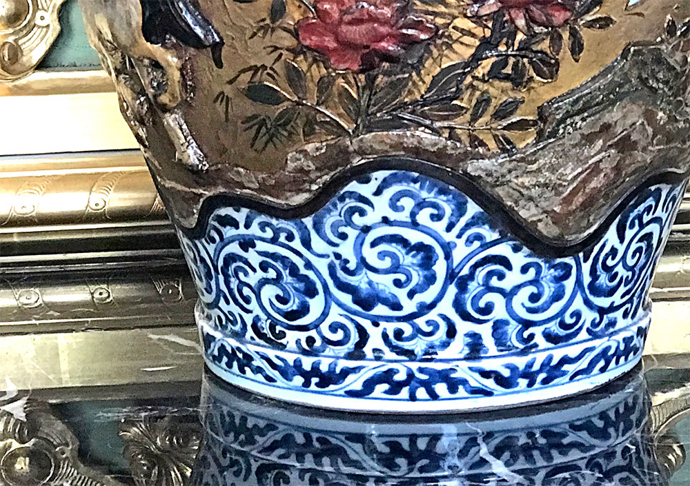
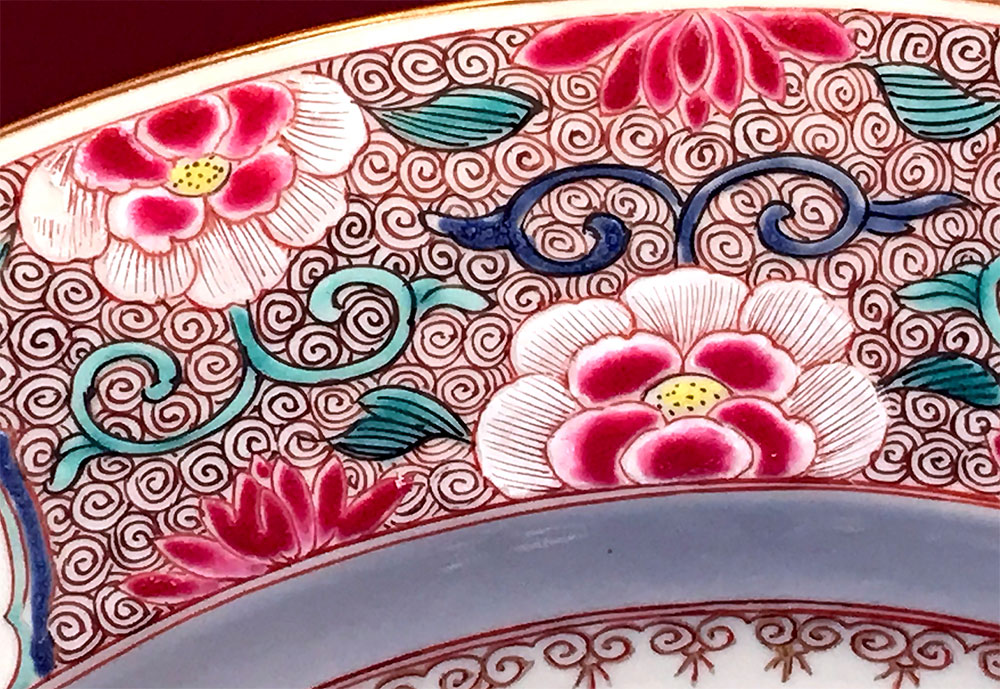
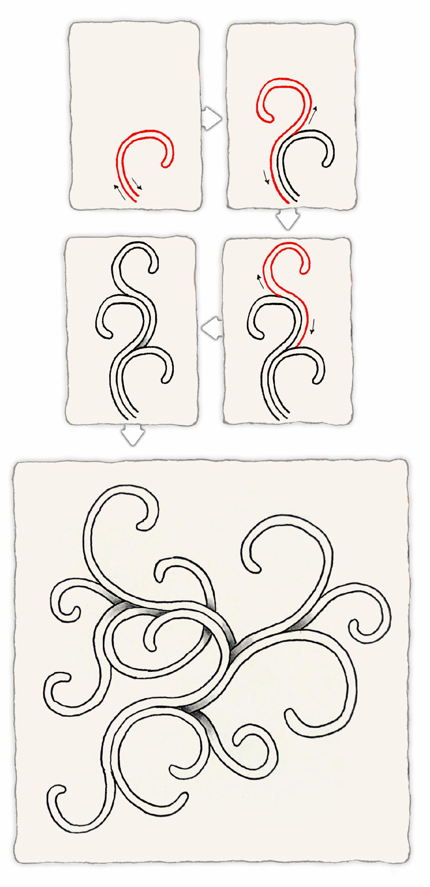
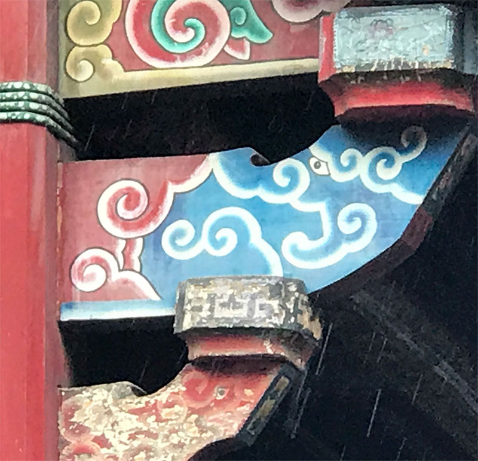
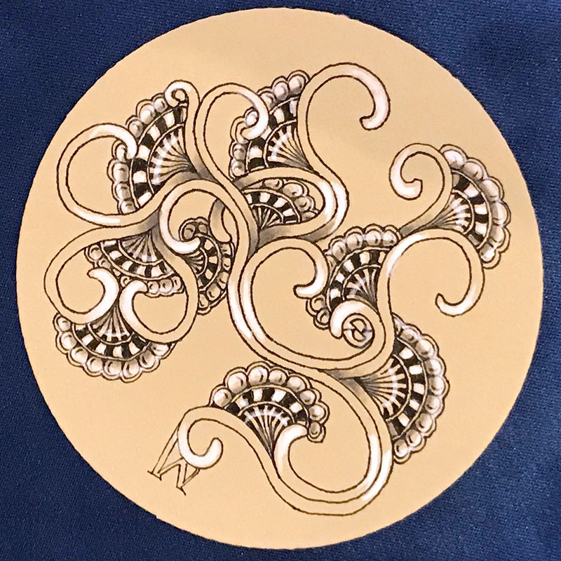

October 3, 2019
Hello CZT,
Rick提到
我跟Maria先前在德国─法兰克福参加欧洲首次举办的CZT seminar。活动结束后，我们去了慕尼黑。慕尼黑是座充满博物馆、教堂以及美丽建筑的城市。我们花了许多时间流连在这些宝贵的建筑物之中，试着从中发现新图样。
在一座博物馆中，我们发现一个了中华文化的陶器。我们仔细留意上面的蛛丝马迹，因为不久后我们即将在台北有一场CZT的大型聚会(这封newsletter就是在参加zenAgain-Asia时所撰写)。这不就是一个绝妙的机会在台湾介绍一个源自亚洲的新图样？
这件陶器的一隅深深地吸引我，因为在上面看到了迷人的笔划。这件陶器作品出自于清朝─康熙年间(1662-1722)；也许我可以从这些笔划中，理出它的解构方法。
|
我尝试了好几种方法，但没有任何一个是贴近禅绕的结构方式。我想，应该是我太专注在复制这个图案上。
于是我寻找它的基本结构，看看是否能“发现”新图样，即便这个新图样并没有很精确的复制原本的图案。回去后，我从头研究在博物馆里有用这种图案创作的其他作品照片。
|

|
|

从下面的步骤分解图中你会发现，我们使用了“光环(aura)”技巧围绕整个图样。这基本的形状就是线条本身的延伸弧线，而当你使用“从后面画(draw behind)”时，你会发现立体公路(hollibaugh)穿梭其中。

我们准备在zenAgain-Asia中介绍这个图样前，我们在台北的下塌饭店周围，时常可以看见类似的图案。以下照片就是在附近的两座庙宇中所拍摄。
  这个图样同时也提供了能与其他图样搭配创作的架构。在昨晚的课程中*，我们第一次公开了Hollis的基本结构，当Maria在创作时，灵感乍现地随手加了几片像是月亮形状的派，并当场为派想了一个名字，叫做“moon pie”。
(*昨晚的课程：指zenAgain-Asia活动课程)
你可以发现，在hollis的分岔处加上moon pie能激发出许多创意，就像上面的右图。

相信各位在这个图样上，会有许多不同方向的发挥，而我为自己设定了“优雅的限制”，我会让第二个hollis紧连着第一个hollis的曲线(起飞的技巧)，接着再改变每一次延展出去的方向。
你也可以尝试改变结束的形状以及光环的宽度，例如：
如同所有的图样，我们都期待看到大家的各种创作，无论是单独创作hollis，或是以hollis作为种子而发展出其他各种可能。
对了，为什么我们要叫它Hollis呢？因为Hollis Littlecreek是一位教导我许多事情的人，包括如何制造以及演奏美国印地安笛。(谢谢你，Hollis！)
Enjoy!
PS. 留意你的信箱收件匣，明天还会有更令人兴奋的讯息！
|
|